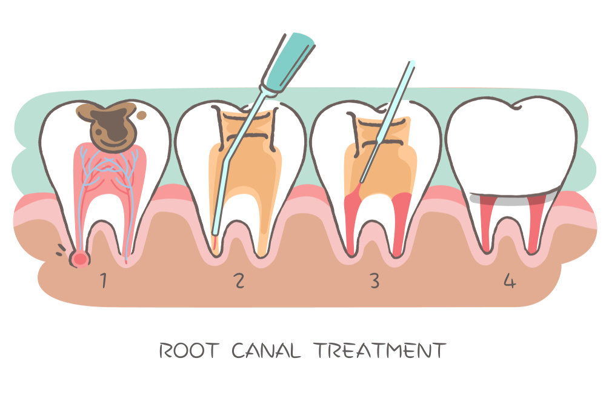
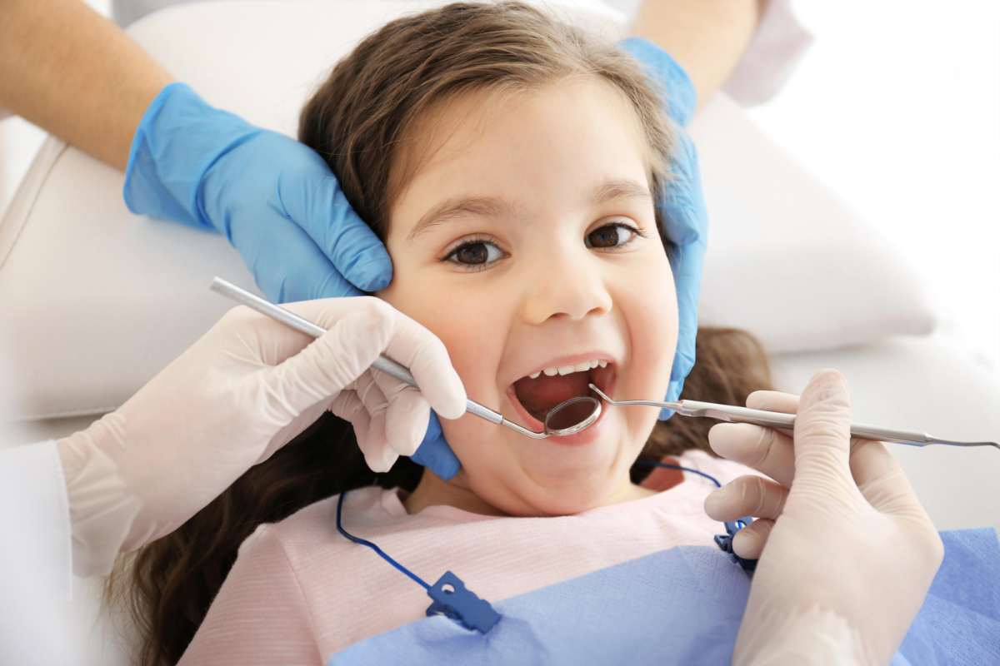
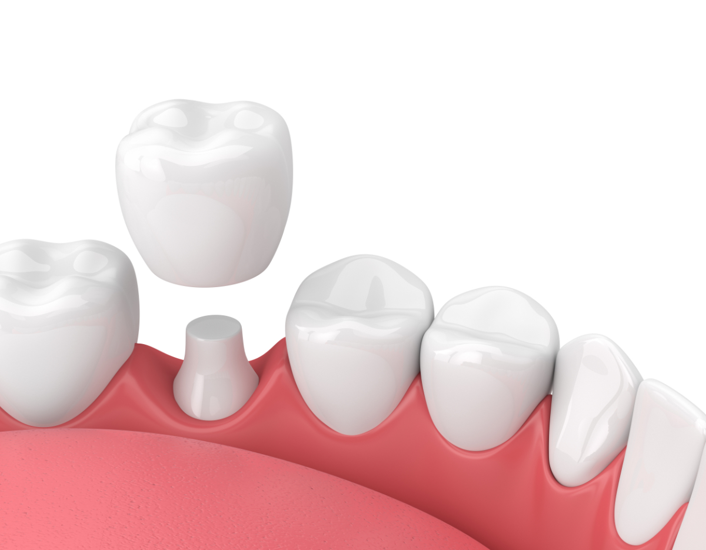
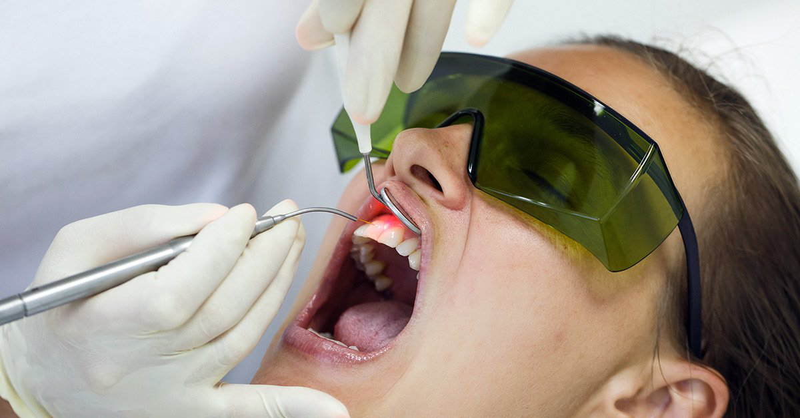
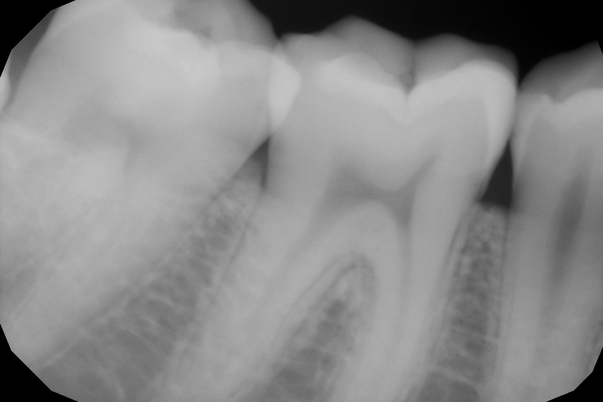
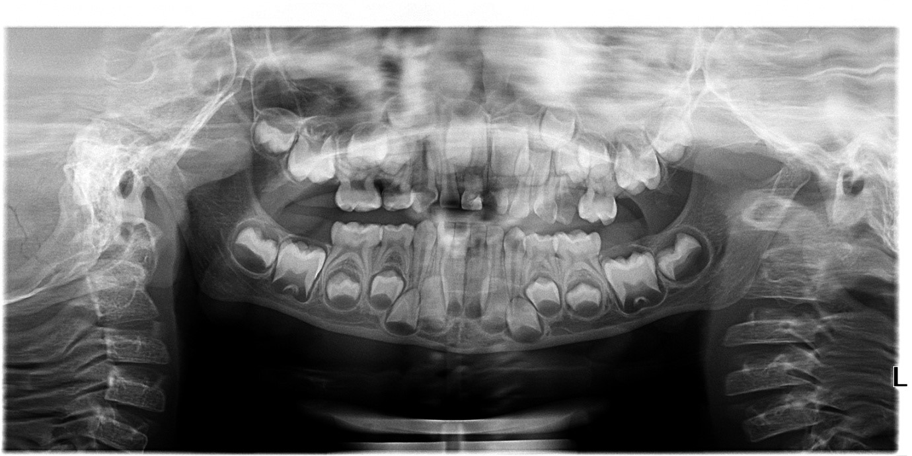

10am to 1.30pm, 5 to 8.30pm (Mon - Sat)
10 am to 1 pm (Sun)
Treatments

ROOT CANAL TREATMENT
Root canal treatment, also known as RCT, is a treatment by which we treat the infected teeth from creating sensations when consuming hot or cold foods and drinks. The sensation itself is a cause of damaged pulp in the tooth.
Procedure
The endodontist or experienced dentist creates a drill in the infected tooth.
The infected pulp is removed from the tooth.
The dentist then disinfects the root canal and seals them with biocompatible filling materials preventing similar infections.
The crown is then placed in the tooth, helping the tooth prevent any fractures.

Metal Braces
Traditional metal braces use elastic ties to hold archwires and produce better results for significantly crooked teeth. This solution is better for teenagers whose looks don’t affect their careers. Elastic ties in traditional braces can slow down treatment and can collect harmful bacteria in the teeth.
Damon Self ligating Braces
The Damon self-igniting braces use a slide mechanism to connect archwires helping the wire move freely. The Damon system reduces friction, eliminating elastic ties and improving oral hygiene.
Benefits of Damon self Igniting braces
Damon braces create a smile arc, giving us a more natural smile compared to metal braces.
The gentle force of Damon braces helps promote efficient tooth movement and help improve oral health-preserving roots.
The Damon braces do not collect plaque and bacteria compared to traditional braces promoting oral hygiene.

CHILD DENTIRSTRY
As per American guidelines of pediatric dentists, It is recommended to parents to bring their child to a dentist as soon as first teeth start to appear.
At PVR Dental, We have an excellent pedodontist who takes care of your child's dental needs in a child-friendly environment.

Dental Crowns
A Dental crows is used to protect and restore damaged and extensively decayed tooth. It also helps in stabilising the tooth. The size of the teeth is first reduced under local anaesthesia and followed by mould of reduced tooth. This impression is then sent to laboratory to produce crowns needed to be fixed in the teeth.

Dental Bridges
A bridge is used to replace the missing teeth and offer support for the surrounding teeth to help to retain the integrity of jaw and face structure. Dental bridge stabilizes the bite of a patient who is missing one or more teeth.
Bridges prevent the surrounding teeth from moving or shifting in the mouth. A missing tooth that is not replaced may cause surrounding teeth to become unstable and require removal, compromising oral health or change the shape of the face and diminish the beauty of a smile.

Laser Dentistry
PVR dental uses laser techniques for crown lengthening, enamel contouring, gum contouring, tooth decay, and tooth whitening. Laser dentistry is painless compared to the traditional method. Bleeding is reduced, and the recovery period is short in the laser process. Laser dentistry is painless compared to the traditional method. Bleeding is reduced, and the recovery period is short in the laser process.
Diagnostic Services

Digital RVG X-Rays
With Digital RVG X-Rays Patiences can see what’s going on through their teeth and can make patients satisfied and confident with the treatment. No other parts are exposed in this method compared to conventional radiography.

Digital Full Mouth Panoramic OPG X-Ray
An OPG provides wide and panoramic view of x-ray of upper and lower face Jaw teeth in a single frame. This method is used for impacted wisdom teeth, periodontal bone loss, finding source of dental pain, fractures and assessments. This method is painless and fast with low radiation which takes only 14 seconds exposure time.